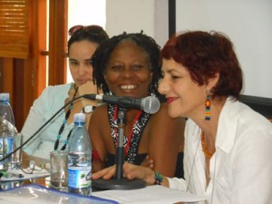

La poesia internazionale Festival dell'Avana 2014 estrenó sus debates sobre temas de género al iniciar en la sala Villena de la UNEAC el foro Mujer, Poesia e cittadino di azione, sotto la guida del poeta cubano Carmen González…
Di: Camilo García Lopez-trigo

En la mañana del martes 27 maggio, il Festival internazionale di poesia dell'Avana 2014 estrenó sus debates sobre temas de género al iniciar en la sala Martínez Villena de la UNEAC el foro Mujer, Poesia e cittadino di azione, sotto la guida del poeta cubano Carmen González.
La introducción estuvo a cargo del Director del Festival, Alex Pausides, quien valoró el encuentro como un espacio de privilegio para las mujeres creadoras —en particular las poetisas— con el objetivo no solo de acentuar su abrumadora presencia en el Festival, sino también crear un lugar de reflexión en su condición de activista social, en el destacado papel que han jugado en la lucha por los cambios sociales en Latinoamérica, frente al patriarcado y el poder machista.
Las palabras de bienvenida fueron ofrecidas por la Vicepresidenta de la UNEAC, Nieves Laferté, quien agradeció la presencia de tantas activistas poetas en el evento y tener la oportunidad de discutir sobre un tema de tanta actualidad, sobre todo cuando en Cuba celebramos el bicentenario de una mujer trascendental para la cultura del país: Gertrudis Gómez de Avellaneda.
Un momento especial en el comienzo del encuentro fue la intervención de la poeta brasileña Nina Reis, coordinadora del Foro y una de sus principales promotoras, la cual destacó este momento del Festival de La Habana como un sueño hecho realidad con el fin de resaltar la incorporación de la mujer y del enfoque de género en la creación artística de Latinoamérica, desde una mirada participativa e integral.
Particularizó en el proyecto cultural “Amapola”, que han ido desarrollando en diferentes comunidades de Brasil y Uruguay, donde se brinda un espacio de “verdadera identificación de género y respeto a las diferencias, sin códigos ni aislamientos”. Propuso este proyecto como una oportunidad para crear redes de integración en el continente y divulgar el arte desde las propias comunidades con un enfoque de género, en el que participan artistas y pobladores.
Igualmente presentó la revista Dualis, la cual se ha convertido en el espacio de promoción de estos esfuerzos, como una memoria colectiva de las actividades que se desarrollan, abierta a cualquier otra propuesta de nuestros países para difundir el trabajo que realizan las mujeres del continente.
La experiencia cubana y sus retos actuales
La segunda parte del foro estuvo dedicado a conocer una parte de la labor realizada desde Cuba en función del género, la cual fue presentada por las escritoras cubanas Helen Hernández Hormilla y Laidi Fernández de Juan.
Helen transmitió la experiencia del encuentro Mirar desde la sospecha, el espacio regular que se ha organizado en la propia sala Villena de la UNEAC durante varios años con el esfuerzo de la profesora Danae Diéguez y la colaboración de otras activistas, instituciones y organizaciones de la sociedad civil cubana.
Resaltó que este espacio surgió a partir de un coloquio realizado en 2010 sobre violencia de género en las artes y, precisamente, tomó ese enfoque para visibilizar la participación de las mujeres y los conflictos que se presentan por motivaciones de género en el campo de la cultura en Cuba, aparentemente tan abierto y que para muchas personas se supone ajeno a patrones patriarcales.
Inoltre, destacó que desde su surgimiento los encuentros siguieron una idea horizontal de participación colectiva, de respeto a las diferentes opiniones que se presentan, con énfasis en el papel de las mujeres en las artes y la inclusión de todas las diversidades. De esta forma, se trabajó también para desmitificar los prejuicios que aún existen con la palabra y la acción del “feminismo” y se realizaron profundos debates sobre temas transversales como la homofobia, la invisibilidad de las narradoras afrodescendientes, tra gli altri.
Uno de los resultados más palpables de este esfuerzo fueron los talleres de capacitación a trabajadores de los medios, especialistas de diseño y de comunicación social, no sólo en La Habana sino en otras provincias y territorios específicos. De esta forma, en la actualidad se han desarrollado proyectos en esos lugares, a partir de los debates realizados, que muestran ejemplos tan alentadores como el de la Televisión Serrana en las montañas de las provincias orientales.
D'altro canto, Laidi Fernández de Juan introdujo el tema de la violencia como un elemento importante a tomar en cuenta en los enfoques de género, el cual —aunque en Cuba no se registran al mismo nivel que en otros lugares del mundo— existe y tiene que ser visibilizado.
En ese sentido compartió con el público el trabajo que está realizando, a partir de una idea de las escritoras Marilyn Bobes y Mirtha Yáñez, para realizar una antología de textos narrativos escritos por mujeres cubanas y que aborden este tema. El libro contará con textos de 35 narradoras —en cuya selección, realizada sobre la base de la calidad, se ha tenido en cuenta un equilibrio del color de la piel y lugar de residencia, tanto en el país como en el exterior— y deberá salir para finales de 2014 con el título Invictas.
Explicó que este título se le debe a uno de los cuadros de la desaparecida pintora cubana Belkys Ayón, por lo que se convertirá en un homenaje a esta famosa artista y a todas aquellas mujeres que puedan creerse derrotadas y, con este libro, se estará mandando un mensaje de apoyo y solidaridad.
Il libro, en el que se recogen historias estremecedoras, estará prologado por la destacada ensayista y crítica literaria Zaida Capote. “Este es nuestro grito, reclamo, exigencia, para que se visibilice el tema de la violencia de género y se cambie el Código Penal cubano, para que sea incluido”, ha ribadito.
Otros elementos aportados durante el debate tuvieron que ver con la dificultad que aún se enfrenta en el enfoque de los medios para tocar los temas de género, así como la visión occidentalizada de la cultura —no sólo en Cuba—, resultado de la imposición de un pensamiento hegemónico en nuestro continente. Como consecuencia, se observan aún limitaciones en algunas poblaciones con el acceso al arte y los valores culturales, reflejo de inequidades y relaciones de poder que afectan nuestras sociedades.
La coordinadora del panel, Carmen González, expresó su esperanza de que el foro sirva para que la palabra y la acción de las mujeres no queden relegadas o sean contadas por otras personas, en función de la integración independientemente del género, la orientación sexual, el color de la piel o cualquier otra diferencia que pretenda dividirnos. Se mostró confiada en que este encuentro se convierta en una oportunidad de discusión y diálogo.
Visiones de género desde otros rincones del continente
A partir de ese momento, el Foro se abrió a otras experiencias presentadas desde diferentes rincones de nuestro continente. El primero en hablar fue el poeta uruguayo Roberto Bianchi (Beto), quien compartió con los presentes su larga práctica en la promoción de la poesía cubana hecha por mujeres con su proyecto cultural “Abrace”, desde Montevideo, y su brazo ejecutor: “Abrace Editora”.
Como amigo de Cuba desde hace varias décadas, señaló que el proceso de fortalecimiento de la cultura de los pueblos a través de la literatura es una necesidad. Por ese motivo, el movimiento cultural que lidera junto a Nina Reis ha trabajado pacientemente en mantener un vínculo con nuestro país y con la región latinoamericana para fortalecer los logros de nuestra cultura y promover el patrimonio cultural de nuestros pueblos.
La también poeta uruguaya Bety Chis trajo a debate la lucha de las mujeres judías inmigrantes, especialmente en su país de origen, en función de preservar su identidad, loro cultura, su lengua, sus costumbres. En ese sentido, el papel femenino –sobre todo el de las madres– es primordial, de acuerdo a los patrones culturales, lo cual se hizo particularmente difícil en la historia de su país a partir de las vicisitudes que debieron enfrentar como mujeres y como judías frente a las dictaduras, lo que implicó torturas, violaciones y exilio.
D'altro canto, en una ponencia de gran impacto, la poeta Pilar Rodríguez Aranda presentó el dilema que enfrentan las poetas chicanas en los Estados Unidos frente al desprecio al bilingüismo y a su propia condición de inmigrantes. Expresó su pleno convencimiento de que ser “chicana” no es una mera situación legal, sino que implica una posición política ante la vida y un activismo crítico en la lucha contra las discriminaciones.
En ese sentido, denunció la escasa existencia de antologías sobre literatura chicana, mucho menos de las mujeres poetas, lo que implica “derribar obstáculos, franquearlos y fijar su propia naturaleza”, de esa “nueva mestiza” que ofrece su testimonio desde el yo individual y no solo cuenta su mundo, sino que espera cambiarlo.
Profundizó en los fenómenos del “bilingüismo” y la “alternancia de códigos”, que se convierte en el medio natural en que se desarrolla su cultura a partir de ser la forma de comunicarse en amplias comunidades de los Estados Unidos, del lenguaje diario que está en la calle. Lamentó la existencia de posiciones que les critican injustamente por “matar el español” o “hablar mal” y pidió darle valor a la historia de lucha de nuestros pueblos que, en un final, conforman su cultura, tan auténtica como las demás.
Las sesiones del foro Mujer, Poesia e cittadino di azione continuará durante el Festival Internacional de Poesía de La Habana 2014 y seguramente se seguirán expresando valiosos testimonios de las más diversas experiencias del continente. Al final se elaborará de conjunto una Declaración Final, en la que se verán reflejados todos estos aportes, con el fin de establecer un canal de comunicación que permita una mejor vía de expresión de las preocupaciones de las poetas del continente con enfoque de género.